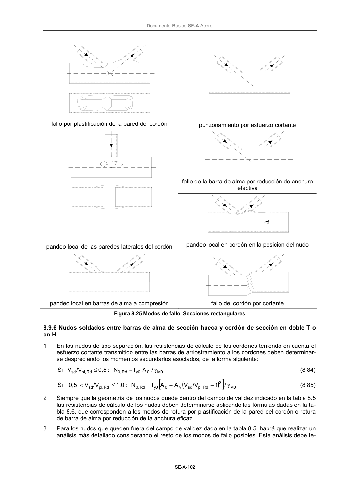

DB-SE-A Acero · edición 2007-10-23 · capa oficial
Documento DB-SE-A-oficial · SHA-256 del PDF 9ed9ea694aabfbda3bfbbef40dfe9223fde05d13c35bc2ba9751e5a96a22a64f
Página física 104 de 168.
Copia fiel del PDF fuente · Fuente oficial
Ficha de la disposición en la fuente oficial
Formato: Texto de la página (Markdown)
Documento Básico SE-A Acero
SE-A-102
fallo por plastificación de la pared del cordón
punzonamiento por esfuerzo cortante
fallo de la barra de alma por reducción de anchura
efectiva
pandeo local de las paredes laterales del cordón
pandeo local en cordón en la posición del nudo
pandeo local en barras de alma a compresión
fallo del cordón por cortante
Figura 8.25 Modos de fallo. Secciones rectangulares
8.9.6 Nudos soldados entre barras de alma de sección hueca y cordón de sección en doble T o
en H
1
En los nudos de tipo separación, las resistencias de cálculo de los cordones teniendo en cuenta el
esfuerzo cortante transmitido entre las barras de arriostramiento a los cordones deben determinar-
se despreciando los momentos secundarios asociados, de la forma siguiente:
0
M
0
y0
Rd
0,
Rd
pl,
sd
/
A
f
N
:
0,5
/V
V
Si
γ
=
≤
(8.84)
(
)
[
]
0
M
2
Rd
pl,
sd
v
0
y0
Rd
0,
Rd
pl,
sd
/
1
/V
V
A
A
f
N
:
1,0
/V
V
0,5
Si
γ
−
−
=
≤
<
(8.85)
2
Siempre que la geometría de los nudos quede dentro del campo de validez indicado en la tabla 8.5
las resistencias de cálculo de los nudos deben determinarse aplicando las fórmulas dadas en la ta-
bla 8.6. que corresponden a los modos de rotura por plastificación de la pared del cordón o rotura
de barra de alma por reducción de la anchura eficaz.
3
Para los nudos que queden fuera del campo de validez dado en la tabla 8.5, habrá que realizar un
análisis más detallado considerando el resto de los modos de fallo posibles. Este análisis debe te-
